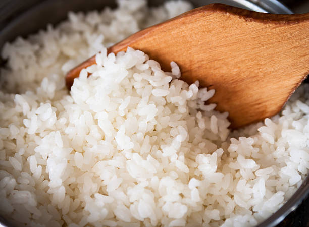

Mis recetas favoritas
Como hacer Arroz
Paso a paso de como hacer un arroz

Ingredientes
- Cebolla
- Ajo
- Arroz
- Aceite
- Sal
- Fideos (opcional)
Procedimiento
- Primero vamos a corta la cebolla y el ajo en partes no tan grandes
- Ya teniendo esos cortados vamos a preparar la olla, poniendo aceite y opcionalmente fideos dejandolos un momentos hasta que queden morenitos
- despues añadimos la cebolla y el ajo, en fuego medio, por unos cuantos minutos, llendo revolviendo para q no se quemen sino que quede el sabor
- despues calculamos 2 vasos de agua las añadimos a la olla con una cucharadita de sal, en caso probar si esta bien de sal o no
- lavamos el arroz para remover impurezas, ya estando bien, lo agregamos a la olla y subimos la temperatura, en caso revolver un poco para que se disperce el sabor bien
- dejamos en esa temperatura constante hasta que veamos que el arroz absorbio el agua, ya esta mas grandecito y el agua ya no lo esta cubriendo
- cuando lo veamos en ese estado procedemos a ponerle una tapa y bajarle la temperatura
- pasados unos 5-10 min vamos revisando q no se queme y que este quedando ni tan seco, ni tan humedo, en su punto
- cuando pase el tiempo y lo veas ni tan seco ni tan humedo, puedes disfrutar de un delicioso arroz